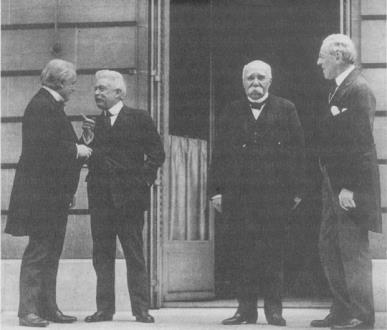

Woodrow Wilson, George Clemanceau, Vittorio Emanuelle Orlando
ve David Lloyd George Versay’da (1919)
11 Kasım 1918 tarihinde, İngiliz Başbakanı David Lloyd George, Almanya ile itilaf Devletleri arasında bir ateşkes anlaşması imzalandığını şu sözlerle açıkladı: “Bu tarihi sabahta, öyle ümit ediyorum ki, bütün savaşları sona erdirdiğimizi söyleyebiliriz.”{281} Gerçekte, Avrupa daha da felaketli bir savaştan sadece yirmi yıl uzaktaydı.
Birinci Dünya Savaşı’nda hiçbir şey planlandığı gibi gitmediğinden, ulusların, kendilerini gözü kapalı felaketin içine attıkları umutların boşluğu kadar, barış arayışının da yine boş ve verimsiz olması kaçınılmazdı. Savaşa katılan her ülke, bu savaşın kısa bir savaş olacağını tahmin etmişti ve barış anlaşmasının şartlarının da, son yüzyılda bütün Avrupa anlaşmazlıklarını sona erdiren diplomatik bir kongre yoluyla kararlaştırılmasını istemişlerdi. Fakat kayıplar dehşet verici boyutlara ulaşınca, aralarındaki çatışmanın başlangıcındaki Balkanlar’da nüfuz çekişmesi, Alsace-Lorraine’nin kimin olacağı ve donanma yarışı gibi siyasi sorunları unuttular. Avrupa devletleri, çektiklerinin sorumlusu olarak düşmanlarının doğasında bulunan kötülüğü gösteriyorlar ve uzlaşmanın gerçek barışı getirmeyeceğine inanıyorlardı; düşman ya toptan yenilmeliydi veya savaş iyice tükeninceye kadar sürdürülmeliydi.
Avrupa liderleri, savaş öncesi uluslararası düzenin uygulamalarına devam etmiş olsalardı, uzlaşma barışı 1915 yılı baharında yapılmış olurdu. Tarafların karşılıklı saldırıları çok kan akıtmıştı ve bütün cephelerde taraflar kımıldayamaz hale gelmişlerdi. Fakat savaşın patlamasından bir hafta önce, seferberlik planlarının diplomasiyi sindirmesi gibi, şimdi de kayıpların derecesi akılcı bir uzlaşmanın önünde bir engel oluşturuyordu. Bunun yerine, Avrupa’nın liderleri barış şartlarını ağırlaştırmaya devam ettiler ve bu suretle onları savaşa sürükleyen yetersizlik ve sorumsuzluklarını artırmakla kalmadılar, aynı zamanda uluslarının bir yüzyıla yakın bir zaman beraber yaşadıkları dünya düzenini de yok ettiler.
1914-15 kışında, askeri strateji ile dış politikanın birbirleriyle olan teması kayboldu. Çatışanların hiçbirisi, bir uzlaşma barışı aramaya cesaret edemedi. Fransa, Alsace-Lorraine’i geri almadan anlaşmaya razı olamazdı; Almanya ise, elde ettiği toprakları geri vermeyi öngören bir barış düşünemezdi. Bir kez savaşa daldıktan sonra, Avrupa’nın liderleri kardeş katili olmaktan o kadar etkilenmişler, genç kuşaklarının tamamının yok edilmesinden dolayı o kadar çılgına dönmüşlerdi ki, zaferin kendisi, bu zaferin üzerinde kurulduğu, yıkıntılar, ne kadar büyük olursa olsun, bir ödül oldu. Katliam derecesindeki saldırılar, tarafların askeri bakımdan kımıldayamaz duruma geldiğini gösterdi ve modern teknolojinin gelişinden önce mümkün olmayan kayıplar verdirdi. Yeni müttefikler bulma çabaları, politik çıkmazı iyice derinleştirdi. Her yeni müttefik, İtilaf Devletleri yanında İtalya ve Romanya, İttifak Kuvvetleri yanında Bulgaristan, tahmin edilen ganimetten payını istedi ki, bu durum, diplomasi için ne kadar esneklik kalmışsa sonunda onu da ortadan kaldırdı.
Barış şartları, gittikçe nihilistik bir karakter almaya başladı. XIX. yüzyılın gizli işler çeviren aristokrat diplomasisi, kitlesel seferberliklerin olduğu çağda anlamsız kaldı, İtilaf Devletleri tarafı, özellikle de Amerika savaşa girdikten sonra, savaşı tanımlarken moral sloganlar kullanıyorlardı: “Bütün savaşlara son verecek savaş” veya “Dünyayı, demokrasi için güvenli bir yer yapmak.” Bu amaçlardan ilki, çok şey vaat etmesine karşın anlaşılabilirdi. Çünkü, uluslar değişik kombinezonlar içinde bin yıldan beri savaş yapıyorlardı. Bu sloganın pratik yorumu, Almanya’nın tam olarak silahtan arındınlması idi. ikinci slogan –demokrasiyi yaymak– Alman ve Avusturya iç kurumlarının devrilmesini gerektiriyordu. Dolayısıyla İtilaf Devletleri’nin her iki sloganı da, sonuna kadar savaş anlamına geliyordu.
Napoleon Savaşları’nda Pitt Planı ile Avrupa dengesi üzerine damgasını vuran Büyük Britanya, tam bir zafer için yapılan baskıları destekliyordu. 1914 Aralı-ğında, Almanların Belçika’dan çekilme karşılığında Belçika Kongosu’nun verilmesi konusunda yaptıkları nabız yoklaması, İngiliz Dışişleri Bakanı Grey tarafından, İtilaf Devletleri’nin ileride “Almanya’dan gelecek bir saldırıya karşı güvence”{282} verilmesinin gerektiği gerekçesi ile reddedildi.
Grey’in sözü, İngilizlerin tavrında bir değişikliğe işaret etmekteydi. Savaşın patlamasından kısa bir süre önceye kadar, Büyük Britanya, güvenliğini, güçlüye karşı zayıfı desteklemek suretiyle koruduğu güç dengesi ile bir tutmuştu. 1914’te Büyük Britanya gittikçe artan bir şekilde bu rolden rahatsız olmaya başlamıştır. Almanya’nın tek başına, kıtanın geri kalan devletlerinin bir arada sahip olduklarından daha kuvvetli bir duruma geldiğini sezinleyen Büyük Britanya, Avrupa’daki kavganın dışında kalmak şeklindeki geleneksel rolünü artık oynayamayacağını hissetti. Almanya Avrupa’da bir hegemonya tehdidi oluşturduğu için status quo ante’ye dönmenin ana problemi hafifletmeye yaramayacağını anladı. Böylece, Büyük Britanya da artık uzlaşma kabul etmeyecek ve Almanya’nın devamlı zayıf konumda kalması, özellikle de Alman Açık Deniz Filosu’nda büyük bir azaltma ile sonuçlanacak kendi “güvenceleri” üzerinde ısrar etti ki, bu, Almanya’nın tamamen yenilmeden hiçbir zaman kabul edemeyeceği bir şeydi.
Almanya’nın şartları ise, daha belirli ve daha jeopolitik idi. Ancak yine karakteristik oran duygusundan yoksunluklarıyla, Alman liderlerinin istedikleri de aşağı yukarı kayıtsız şartsız teslim anlamına geliyordu. Batı’da, Kuzey Fransa’nın kömür madenlerinin ilhakını ve Anvers Limanı dâhil Belçika üzerinde askeri kontrol istiyorlardı ki, bunlar İngiltere’nin amansız düşmanlığı için yeterli idi. Doğu’da, Almanya yalnızca 5 Kasım 1916’da “irsi ve anayasal hanedana dayalı, bağımsız bir devlet”{283} kurmayı vaat ettiği Polonya için resmi koşullar belirtti ki, bu suretle Rusya ile bir uzlaşma barışı ümidini ortadan kaldırmış oluyordu. (Almanya’nın ümidi, Polonya’ya bağımsızlık vaadi ile beş tümene yetecek kadar Polonyalı bir gönüllüler ordusu toplayabileceği idi; fakat çıka çıka 3000 gönüllü çıktı).{284} Rusya’yı yendikten sonra, Almanya 3 Mart 1918’de Brest-Litovsk Antlaşması’nı empoze etti ki, buna göre, Rusya’nın üçte birini topraklarına katıyor ve Ukrayna üzerinde himaye oluşturuyordu. Sonunda Weltpolitik ile ne demek istediğini tanımlayan Almanya, Avrupa üzerinde en azından bir hegemonya kurmaya karar verdiğini gösteriyordu.
Birinci Dünya Savaşı, fiili savaşa kadar bütün kararlardan önce bir büyükelçilikten diğer büyükelçiliğe notaların ve krallar arasında telgrafların alınıp verilmesi şeklinde tipik bir kabine savaşı olarak başladı. Fakat savaş ilan edildikten sonra ve Avrupa başkentleri bağırıp çağıran kalabalıklarla dolup taşınca, artık sorun başbakanlıklar arasındaki bir sorun olmaktan çıkmış, halk kitlelerinin kavgası haline dönüşmüştü. Savaşın ilk iki yılından sonra, her iki taraf da denge nosyonu ile uzaktan yakından ilgisi olmayan şartlar ileri sürmeye başlamışlardı.
Herkesin hayalinin ötesinde olan şey, her iki tarafın da aynı zamanda hem yenen ve hem de yenilen taraf olabileceğiydi: Almanya Rusya’yı yenecek ve Fransa ve İngiltere’yi ciddi şekilde zayıflatacaktı; fakat sonunda, çok ihtiyaç duyulan Amerikan yardımı ile Batı İtilaf Devletleri savaştan muzaffer olarak çıkacaktı. Napoleon savaşlarının sonrası, dengeye dayanan ve ortak değerlerle korunan barış içinde geçen bir yüzyıl olmuştur. I. Dünya Savaşı sonrası ise, sosyal çalkantılar, ideolojik çatışma ve bir başka dünya savaşı oldu.
Savaşın başlangıcındaki heyecan, Avrupa halkları hükümetlerinin, kan dökme yeteneklerinin zafer veya barış yapma yetenekleri ile orantılı olmadığını anlamaya başlayınca kendiliğinden uçtu gitti. Sonuç olarak ortaya çıkan girdapta, birliktelikleri Kutsal ittifak günlerinde Avrupa barışını ayakta tutan Doğu Sarayları devrildi. Avusturya-Macaristan İmparatorluğu, tamamen tarihten silindi. Rusya imparatorluğu Bolşevikler tarafından devralındı ve yirmi yıl boyunca Avrupa’nın dışına çekildi. Almanya, birbiri ardına gelen yenilgi, ihtilal, enflasyon, ekonomik çöküntü ve diktatörlüklerle çalkalandı durdu. Fransa ve Büyük Britanya da düşmanlarının zayıf durumundan yararlanamadı. Düşmanı, savaştan önceki jeopolitik durumuna göre daha da kuvvetli yapan bir barış için, genç kuşaklarının en iyilerini feda etmişlerdi.
Bu büyük sorun tam boyutları iyice belirginleşmeden önce, Avrupa Konferansı Düzeni’nden bu zamana ne kalmışsa onu bir kerede ve tamamen ortadan kaldırmak üzere yeni bir oyuncu sahneye çıktı. Savaşın yıkıntıları ve üç yıl boyunca kan dökmenin yarattığı düş kırıklığı arasında, Amerika yorgun Avrupalı müttefikler için hayal edilemeyecek bir güven, güç ve idealizm ile uluslararası arenaya adımını attı.
Amerika’nın savaşa girmesi teknik bakımdan toptan zaferi sağladı fakat Avrupa’nın üç yüzyıldan beri tanıdığı ve korumak için savaşa girdiği dünya düzeni ile çok az ilişkisi olan amaçlar için bunu yapmıştı. Amerika güç dengesi kavramını beğenmiyordu ve Realpolitik uygulamasını ahlak dışı buluyordu. Uluslararası düzen için Amerika’nın kriteri, demokrasi, ortak güvenlik ve self-determinasyon idi ki, bunların hiçbirisi, daha önceki hiçbir Avrupa anlaşmasında yer almış şeyler değildi.
Amerikalılar için, kendi felsefeleri ile Avrupa düşünce tarzı arasındaki uyumsuzluk kendi inançlarının değerini gösteriyordu. Wilson’ın dünya düzeni düşüncesi, Eski Dünya’nın kural ve deneyimlerinden radikal bir kopuşla, Amerika’nın insanlığın esas olarak barışsever bir doğası olduğu ve dünyanın temelinde uyum olduğu inancından kaynaklanmaktaydı: Demokratik devletlerin, tanım olarak barışsever oldukları ve self-determinasyon hakkı olan insanların artık savaşmaya veya diğerlerine baskı yapmaya gerek duymayacakları da bunu takip ediyordu. Dünyanın bütün halklarının, bir kez barış ve demokrasinin nimetlerini tattıktan sonra, kazançlarını savunmak için tek bir vücut halinde ayağa kalkacakları açıktı.
Avrupalı liderlerinin, böyle fikirleri içine alan düşünce kategorileri yoktu. Ne iç kurumları, ne de uluslararası düzenleri, insanın özünde iyi olduğunu kabul eden politik teoriler üzerine oturtulmuştu. Gerçekte bu kurumlar, insanın açık bencilliğini, daha yüksek bir iyiliğin hizmetine koymak üzere düşünülmüştü. Avrupa diplomasisi, devletlerin barışsever doğasına değil, kırılması veya dengelenmesi gereken savaş eğilimine dayandırılmıştı, ittifaklar, soyut bir barışı korumak için değil, belirli ve tanımlanabilir hedeflere varmak için oluşturulmuştu
Wilson’ın self-determinasyon ve ortak güvenlik doktrinleri, Avrupalı diplomatları, tamamen yabancısı oldukları bir sahaya çekmiştir. Bütün Avrupa düzenlemelerinin gerisindeki varsayım, sınırların güç dengesini daha iyi hale getirmek için düzenlenebileceğiydi; çünkü güç dengesinin gerekleri, düzenlemeden etkilenen halkın tercihlerinden önce gelmekteydi. Pitt’in, Napoleon Savaşları’nın sonunda, Fransa’yı çevrelemek için “büyük halk topluluklarını öngörmesi de, bu şekilde mümkün olmuştu.
Örneğin bütün XIX. yüzyıl boyunca, Büyük Britanya ve Avusturya, Osmanlı İmparatorluğu’nun dağılmasına karşı koydular; çünkü ortaya çıkacak küçük ulusların, uluslararası düzeni bozacağı inancında idiler. Onların düşüncelerine göre, küçük ulusların deneyimsizliği, bölgesel etnik çekişmeleri büyütecek ve göreceli zayıflıkları da büyük devletlere onlara sataşma cesareti verecekti, İngiliz ve Avusturyalıların görüşüne göre, küçük devletlerin ulusal hırslarının, daha önemli olan barıştan sonra düşünülmesi gerekirdi. Denge adına, Fransa’nın, Belçika’nın Fransızca konuşan Wallon bölgesini topraklarına katması önlendi ve Almanya’nın Avusturya ile birleşme cesareti kırıldı. (Bismarck’ın ise, Almanya’nın Avusturya ile birleşmemesi için kendi nedenleri vardı.)
Wilson, bu yaklaşımı tamamen reddetti ve o tarihten beri de Birleşik Devletler bu düşünceyi reddetmektedir. Amerika’nın görüşüne göre, savaşlara neden olan self-determinasyon prensibinin varlığı değil, bu prensibin yokluğudur; istikrarsızlığı güç dengesi yokluğu değil, onun peşinden koşmak yaratır. Wilson, barışın ortak güvenlik prensibi üzerine kurulmasını önerdi. Kendisinin ve takipçilerinin görüşüne göre, dünya güvenliği için ulusal çıkarların değil, hukuki bir kavram olarak barışın savunulması gerekliydi. Barışın bozulup bozulmadığını belirlemek için de uluslararası bir kuruma gereksinim vardı ki, bu da Wilson’ın Milletler Cemiyeti’ydi.
Böyle bir kuruluşun ilk kez güç dengesi diplomasisinin kalesi sayılan Londra’da ortaya çıkması hayret vericidir. Bu fikrin arkasındaki amaç, yeni bir dünya düzeni için girişimde bulunmak değil, fakat İngiltere’nin Amerika’yı, eski düzenin savaşına girmeye ikna edecek akılcı bir neden bulma arayışıdır. 1915 Eylülü’nde, Dışişleri Bakanı Grey, İngiliz uygulamasında devrim sayılabilecek bir şekilde, Wilson’ın yakın arkadaşı Albay House’a bir mektup yazarak, idealist Amerikan başkanının reddetmeyeceğine inandığı bir öneride bulundu:
Grey, başkanın, silahsızlandırmayı zorla uygulayacak ve anlaşmazlıkları barışçı yollardan çözecek bir Milletler Cemiyeti ile ne derecede ilgilendiğini sordu:
“Başkan, antlaşmayı bozan herhangi bir devlete karşı durmayı üstlenen bir Milletler Cemiyeti mi öneriyor... yoksa anlaşmazlık halinde, savaştan başka bir çözüm metodu benimseyen bir Milletler Cemiyeti mi düşünüyor?”{285}
200 yıl boyunca sonu nereye varacağı belli olmayan ittifaklardan uzak duran Büyük Britanya’nın, böyle birdenbire bu tür bağlantılara hevesli olması olacak şey değildi. Ancak Büyük Britanya’nın Alman tehdidine karşı hemen galip gelme arzusu o kadar büyüktü ki, dışişleri bakanı hayal edilebilecek sonu belirsiz bir ortak güvenlik doktrinini gözü kapalı ileri sürebildi. Önerdiği dünya kuruluşunun her üyesi, nerede ve nereden gelirse gelsin, saldırıya karşı koymak ve anlaşmazlıklarını barış yoluyla çözmeyi reddeden ulusları cezalandırma yükümlülüğü altına da giriyordu.
Grey, adamını iyi tanıyordu. Wilson gençliğinden beri, Amerikan federal kurumlarının, nihai bir “insanlık parlamentosu” için bir model olması gerektiğine inanıyordu; başkanlığının ilk zamanlarında, Batı yarımküresinde bir Pan-Amerikan paktı için zemin yoklamıştı. Grey, tam olarak oldukça açık olan düşüncesini kabul eden çabuk bir cevap alınca, herhalde şaşırmamış, bilakis minnettar olmuştur.
Bu karşılıklı mektup alıp verişi, Büyük Britanya ile Amerika arasındaki “özel ilişki”nin en erken göstergesi olup, Büyük Britanya savaştan sonra eski gücünü kaybetmesine rağmen, bu ilişki dolayısıyla Washington üzerinde özel nüfuzunu koruyabilmiştir. Ortak dil ve kültür mirası incelikle birleşince, İngiliz liderler kendi fikirlerini Amerikan karar verme sürecine öyle bir aşıladı ki, bunlar Washington’un kendi düşüncelerinin bir parçası olarak göründüler. Böylece Mayıs 1916’da, Wilson ilk kez olarak bir dünya kuruluşu için planını, kendi fikri olduğuna hiçbir şüphesi olmadan ileri sürmüştür. Aslında öyleydi de, çünkü Grey Wilson’ın benzer inançlarından tamamen haberdar olarak o öneride bulunmuştu.
İlk doğuşuna bakılmazsa, Milletler Cemiyeti fikri, özünde bir Amerikan kavramıdır. Aslında Wilson’ın tasarladığı şey, “denizlerin bütün dünya ulusları tarafından ortak olarak ve engellenmeden kullanılması güvencesinin bozulmamasını sağlayacak ve anlaşmalara aykırı olarak uyarmadan veya dünya kamuoyunu nedenleri hakkında bilgilendirmeden çıkarılacak savaşlara engel olacak –bu, toprak bütünlüğü ve politik bağımsızlık demektir– bir evrensel uluslar birliği”{286} kurmaktı.
Ancak başlangıçta, Wilson, Amerika’nın bu “evrensel birlik”e katılmasını önermekten kaçındı. Sonunda Ocak 1917’de hayret uyandıracak bir şekilde Monroe Doktrini’ni bir model gibi kullanarak, ilk hareketi yaptı ve Amerika’nın üyeliğini savundu:
“Ulusların uyum içinde, Başkan Monroe’nun doktrinini bir dünya doktrini olarak kabul etmelerini öneriyorum: Hiçbir ulus kendi politikasını başka bir ulusa veya halka kabul ettirme peşinde olmasın... Bütün uluslar bundan böyle, kendilerini kuvvet çekişmesine götürecek karmaşık ittifaklar yapmaktan kaçınsın...”{287}
Meksika, XIX. yüzyılda topraklarının üçte birini alan ve birliklerini Meksika’ya gönderen ülkenin başkanının, şimdi kardeş ülkelerin toprak bütünlüğü ve uluslararası işbirliğinin klasik bir örneği olarak Monroe Doktrini’ni sunmasına büyük olasılıkla çok şaşırmıştır.
Wilson idealizminin, görüşlerinin doğasındaki değer yargıları dolayısıyla, Avrupa’da başarılı olacağı inancı kısa ömürlü oldu. Wilson, baskı ile ilave argümanlar ileri sürmeye tamamen hazır olduğunu gösterdi. Amerika’nın Nisan 1917’de savaşa girmesinden hemen sonra Albay House’a şöyle yazıyordu: “Savaş bitince onları kendi düşünce tarzımıza zorlayabiliriz; çünkü o zaman, diğer şeylerle birlikte mali bakımdan da avucumuzun içinde olacaklardır.”{288} İtilaf Devletleri’nin birkaçı, Wilson’ın fikrine cevap verme işini ağırdan aldılar. Her ne kadar geleneklerine bu kadar karşıt görüşleri onaylamak zorlarına gidiyorsa da, açıkça karşı tavır alamayacak kadar da Amerika’ya muhtaçtılar.
1917 Ekimi kadar geç bir tarihte, Wilson, House’u, ilan etmiş olduğu bir dünya otoritesi tarafından korunan toprak ilhakı ve tazminat olmaksızın barışçıl düşünceleri yansıtan savaş amaçları formüle etmelerini istemek maksadıyla Avrupalılara gönderdi. Birkaç ay Wilson, kendi görüşlerini ileri sürmekten kaçındı; çünkü House’a açıkladığı gibi, Amerika toprak taleplerinin adil olup olmadığı hakkında kuşku ifade ettiği takdirde, Fransa ve İtalya’nın karşı çıkacağından çekiniyordu.{289}
Sonunda 8 Ocak 1918’de Wilson kendi görüşlerini ortaya koydu. Kongre’nin bir ortak oturumunda yaptığı konuşmada, olağanüstü bir belagatle Amerika’nın savaş amaçlarını iki kısma ayrılan 14 nokta şeklinde açıkladı. Sekiz noktayı yapılması zorunlu hususlar olarak şöyle sıraladı: Açık diplomasi, denizlerin serbestliği, genel silahsızlanma, ticari engellerin kaldırılması, sömürgecilikle ilgili taleplerin tarafsız bir şekilde çözümlenmesi, Belçika’nın yeniden kurulması, Rus topraklarının boşaltılması ve taçtaki en değerli mücevher olarak Milletler Cemiyeti’nin kurulması.
Wilson, geri kalan daha spesifik altı noktayı yapılması “zorunlu” değil de “gerekli” şeklinde sundu. Alsace-Lorraine’in Fransa’ya geri verilmesi sürpriz bir şekilde zorunlu olmayan kategorideydi. Çünkü bu bölgenin geri alınması yarım yüzyıldan beri Fransız dış politikasının esasını oluşturuyordu ve savaşta benzeri görülmemiş fedakârlıklara sebep olmuştu. Diğer “arzu edilen” amaçlar, Avusturya-Macaristan ve Osmanlı imparatorluklarının azınlıklarına özerklik verilmesi, İtalya’nın sınırlarının yeniden düzenlenmesi, Balkanlar’ın boşaltılması, Boğazlar’ın uluslararası statüye kavuşturulması ve denize çıkışı olan bağımsız Polonya’nın yeniden kurulması şeklinde belirlenmişti. Acaba Wilson, bu altı şartın uzlaşma konusu yapılabileceğini mi söylemek istemişti? Polonya’nın denize çıkışının ve İtalya’nın sınırlarının düzeltilmesinin, self-determinasyon prensibi ile uzlaştırılması gerçekten zor olacaktı ve bu nedenle de Wilson’ın planının moral simetrisindeki ilk çatlaklar bunlardı.
Wilson sunuşunu, Amerika’nın yeni dünya düzenini kurarken yararlanacağı uyum sağlama ruhu adına Almanya’ya hitap ederek tamamladı ki, bu, tarihi savaş amaçlarını dışarıda bırakan bir tavırdı:
“Biz onun (Almanya) başarılarını veya bilgi düzeyini yahut barışçı girişimlerini kıskanmıyoruz ki. Bu konulardaki durumu çok parlak ve imrenilecek düzeydedir. Onu incitmek veya hukuka uygun nüfuz ve gücünün önüne set çekmek de istemiyoruz. Bizimle ve diğer barışsever dünya ulusları ile adil, hukuka uygun ve dürüst anlaşmalarla işbirliğine istekli oldukça, biz onunla ne silahlarla, ne de düşmanca ticaret düzenlemeleri ile savaşmak niyetindeyiz. Ondan tek istediğimiz, dünya halkları arasında eşit bir yer kabul etmesidir...”{290}
Şimdiye kadar hiç böyle devrim yaratacak amaçlar, bunların nasıl uygulanacağını gösteren bu kadar az yol gösterici ilke ile ileri sürülmemişti. Wilson’ın tasarladığı dünya, yenen veya yenilen fark etmeksizin, güce değil, prensiplere; çıkarlara değil, hukuka dayanacaktı; diğer bir deyişle, tarihi deneyimin ve büyük devletlerin çalışma metodunun tam tersi yapılacaktı. Bunun bir sembolü, Wilson’ın kendisinin ve Amerika’nın savaştaki rolünü tanımlama şekliydi. Amerika, Wilson “müttefik” kelimesinden nefret ettiği için, tarihin en vahşi savaşlardan birisinin “bir tarafı” lehine savaşa katılmıştı ve sanki başlıca arabulucuymuş gibi hareket ediyordu. Şunu söylemek ister gibiydi: Savaş, belli özel şartların gerçekleşmesi için yapılmadı; fakat Almanya’nın belli bir tavır takınmasını sağlamak için yapıldı. Yani savaş jeopolitik nedenlerle değil, bir tavır değişikliği için yapıldı.
Ateşkesten sonra, 28 Aralık 1918’de Londra’da Guildhall’da yaptığı bir konuşmada Wilson, güç dengesini, istikrarsız ve “kıskanç bir gözlemciliğe ve çıkarların çatışmasına” dayalı bir sistem olarak açıkça kınadı:
“Onlar (İtilaf Kuvvetleri askerleri) eski düzenden kurtulmak ve yeni bir düzen kurmak için savaştılar. Eski düzenin merkezi ve karakteristiği, güç dengesi denilen istikrarsız bir şeydi, bir kılıcın şu veya bu tarafta çekilmiş olması ile sağlanan bir denge; birbiri ile çatışan çıkarların sağladığı bir denge... Bu savaşta çatışan insanlar, bazı şeylerin şimdi son bulmasını ve bir daha hiç olmamasını isteyen özgür ulusların insanlarıydı.”{291}
Wilson, Avrupa uluslarının her şeyi yüzlerine gözlerine bulaştırdıkları konusunda kuşkusuz haklı idi. Ancak I. Dünya Savaşı çöküntüsünün nedeni güç dengesinin kendisinden çok, Avrupa’nın güç dengesi uygulamasından çekilmiş olmasıdır. I. Dünya Savaşı öncesinin Avrupa liderleri, tarihi güç dengesi prensiplerine önem vermediler ve son kozların oynanmasını önleyebilecek olan periyodik düzenlemeleri de yapmadılar. Onun yerine, geleceğin Soğuk Savaş’ından daha da az esnek iki kutuplu bir dünya ortaya koydular ki, bu sistem, nükleer çağın felaket önleyici sisteminden de yoksundu. Dengeye sahte bağlılık gösteren Avrupa liderleri, kendi kamuoylarının en milliyetçi unsurlarını hoşnut etmeye çalıştılar. Ne politik, ne de askeri düzenlemeleri esneklik sağlayabildi. Status quo ile büyük yangın arasında bir güvenlik supabı yoktu. Bu durum çözülemeyecek krizlere yol açtı ve halkların kesin tutum almaları sonucunda geri çekilmeyi de önledi.
Wilson, XX. yüzyılın bazı önemli sorunlarını isabetle tespit etti. Özellikle de kuvvetin nasıl barışın emrine verilebileceğini buldu. Fakat onun bulduğu çözümler, çok kez belirlenen problemleri de içeriyordu. Çünkü devletler arasındaki rekabeti, öncelikle self-determinasyon ve ekonomik hareketi teşvik edecek nedenlerin yokluğuna bağlamıştı. Oysa tarih, birçok başka çatışma nedeni olduğunu gösteriyor. Bunlardan en sık görüleni ve en belirgin olanı, ulus olarak kendini dev aynasında görmek ve yöneticisini veya yönetici grubunu yüceltmektir. Böyle davranışlarla alay eden Wilson, demokrasinin yaygınlaştırılmasının bunları önleyeceğini ve self-determinasyonun da onları odak noktasından yoksun bırakacağı kanısındaydı.
Wilson’ın ortak güvenlik önlemi, dünya uluslarının saldırı, adaletsizlik ve aşırı bencilliğe karşı birleşeceği varsayımına dayanıyordu. 1917’nin başlarında Senato’da Wilson, devletler arasında eşit hakların kurulmasının, her bir devletin temsil ettiği güce bakılmaksızın ortak güvenlik yoluyla barışı korumanın ön şartı olduğunu söyledi:
“Hak, tek bir kuvvete değil, barışın onların uyumlarına dayandığı uluslararası ortak güce dayanmalıdır. Toprak veya kaynakların eşitliği elbette söz konusu değildir. Halkların, normal barışçı yollarla ve hukuka uygun gelişmelerle kazanılmamış haklarında da eşitlik olamaz. Fakat kimse, hakların eşitliğinden başka bir şey talep etmiyor veya beklemiyor, insanlık şimdi yaşama özgürlüğü bekliyor, karşılıklı güç dengesi değil.”{292}
Wilson, saldırıya karşı direnmenin, jeopolitik gereklere değil, moral gereklere dayanacağı bir dünya düzeni öneriyordu. Uluslar, yapılan hareketin tehdit edici olup olmadığını değil, adil olup olmadığını soracaklardı. Her ne kadar Amerika’nın müttefikleri bu yeni düzenlemeye inanmamış iseler de, karşı koyamayacak kadar kendilerini zayıf hissediyorlardı. Amerika’nın müttefikleri, güce dayanan dengenin nasıl hesaplanacağını biliyorlardı veya bu konuyu düşünmüşlerdi; ancak moral kurallar bazına oturtulan dengenin nasıl değerlendirileceğini bilmedikleri gibi, bunu başka kimse de bilmiyordu.
Amerika savaşa girmeden önce, Avrupa demokrasileri, Wilson’ın düşünceleri hakkında kuşku duyduklarını açıkça söylemeye hiçbir zaman cesaret edemediler; gerçekte Wilson’ın suyuna giderek onu savaşa sokuncaya kadar ellerinden gelen her şeyi yaptılar, İtilaf Devletleri Amerika kendi taraflarında yer alıncaya kadar çok kötü durumda idiler. Büyük Britanya, Fransa ve Rusya’nın birleşmiş kuvvetleri, Almanya’yla başa çıkmakta yeterli değildi ve Rus Devrimi sonrasında, Amerika’nın savaşa girmesinin, Rusya’nın çöküşünü dengelemekten başka bir faydası olmayacağından da korkuyorlardı. Rusya ile yapılan Brest-Litovsk Antlaşması da, Almanya’nın, kaybedenlerin geleceği hakkında ne düşündüğünü ortaya koydu. Bir Alman zaferi korkusu, Büyük Britanya ve Fransa’yı, idealist Amerikan ortağı ile savaşın amaçlarını görüşmekten alıkoydu.
Ateşkesten sonra, İtilafçılar, kendilerini, çekincelerini belirtecek kadar iyi durumda hissettiler. Bir Avrupa ittifakının, zafer sonrasında zorlandığı veya kopma noktasına geldiği de ilk kez görülmüyordu. (Örneğin, Viyana Kongresi’nde öyle bir an geldi ki, galip devletler birbirlerini savaşla tehdit ettiler.) Yine de I. Dünya Savaşı’nın galipleri verdikleri kayıplarla o kadar zayıflamış ve Amerikan devine o kadar muhtaç durumda idiler ki, onunla hırçın bir diyaloga girmeyi veya Amerika’nın barış anlaşmasından çekilmesini göze alamadılar.
Bu durum, şimdi kendini gerçekten acıklı bir durumda bulan Fransa için özellikle doğru idi. İki yüzyıl boyunca Avrupa’nın efendisi olmak için savaşan Fransa, savaş sonrasında artık sınırlarını yenilmiş bir düşmana karşı bile koruyabilme yeteneği olduğuna güvenmeyen bir devlet haline düşmüştü. Fransız liderleri, içgüdüsel olarak Almanya’yı zapt etmenin bu harap olmuş toplumun olanakları dışında olduğunu anladılar. Savaş Fransa’yı tüketmişti ve barışın daha da çok felaket getireceği önsezisi vardı. Var olmak için savaşan Fransa, şimdi de kişiliği için kavga veriyordu. Fransa yalnız kalmaya cesaret edemedi; ancak en güçlü müttefiki de güvenliği hukuki bir sürece döndürecek olan prensipler üzerine dayalı bir barış kurulmasını öneriyordu.
Zafer, Fransa’yı, rövanşın ülkeye çok pahalıya mal olduğu ve hemen hemen yüzyıllık bir sermayeyi tükettiği acı gerçeğiyle yüz yüze getirdi. Fransa, Almanya ile karşılaştırıldığı zaman kendisinin ne kadar zayıf olduğunu biliyordu; fakat başkaları, özellikle Amerika buna inanmaya hazır değildi. Böylece, zaferin hemen öncesinde, Fransa’nın moralinin bozulması sürecini çabuklaştıran bir Fransız-Amerikan diyalogu başladı. Modern dönemdeki İsrail gibi Fransa da, panik içinde zayıf tarafını, aşırı hassasiyet ve inatçılıkla sakladı ve yine İsrail gibi, sürekli olarak yalnızlık tehlikesi içinde yaşadı.
Her ne kadar müttefikleri, Fransa’nın korkusunu abarttığında ısrar ettilerse de, Fransız liderler durumlarını daha iyi biliyorlardı. 1880’de, Fransızlar Avrupa nüfusunun % 15,7’sini oluştururken, bu oran 1900’de % 9.7’ye düştü. 1920’de Fransa’nın nüfusu 41 milyon iken, Almanya’nınki 65 milyon idi. Bu durum, Almanya’ya karşı yatıştırıcı politikasını eleştirenlere Fransız devlet adamı Briand’ın, Fransa’nın doğum oranına göre dış politikayı yürüttüğü argümanıyla cevap vermesine sebep oluyordu.
Fransa’nın göreceli ekonomik gerilemesi ise, daha da içler açışıydı. 1850’de Fransa, kıtadaki en büyük sanayi devleti idi. 1880’de, Almanya’nın çelik, kömür ve demir üretimi Fransa’nınkini geçti. 1913’te Fransa, Almanya’nın 279 milyon tonuna karşı, 41 milyon ton kömür üretti; 1930’larm sonunda eşitsizlik, Fransa’nın 47 milyon tonuna karşı Almanya’nın 351 milyon tonuna kadar büyüdü.{293}
Yenilen düşmanın hâlâ güçlü olması, Viyana sonrası ile Versay sonrası uluslararası düzenler arasındaki en önemli farklılığa işaret etmekteydi; bunun nedeni, Versay’dan sonra galipler arasında birlik olmamasıydı. Bir kuvvetler koalisyonu Napoleon’u yendi ve imparatorluk Almanya’sına üstün gelmek için de bir kuvvetler koalisyonuna ihtiyaç vardı. Yenildikten sonra, hem Fransa 1815’te, hem de Almanya 1918’de, koalisyon devletlerinden herhangi biriyle, belki de ikisiyle tek başına baş edebilecek kadar güçlü kalmışlardı. Aradaki fark, 1815’te Viyana Kongresi’ndeki barış mimarlarının birliklerini koruyup Dörtlü İttifak’ı kurmuş olmalarıydı ve bu ittifak herhangi bir revizyonist rüyayı, kâbusa döndürecek kadar karşı konulmaz güçte bir koalisyondu. Versay sonrası dönemde, galipler müttefik olarak kalmadılar; Amerika ve Sovyetler Birliği tamamen çekildiler ve Büyük Britanya da Fransa’yla ilgili konularda çok kararsızdı.
Versay sonrası döneme kadar, Fransa, 1871’de Almanya’ya yenilmesinin bir istisna olmadığını anlayamamıştı. Fransa’nın Almanya ile eşitliğini ve tek başına dengeyi koruması için tek yol, Almanya’yı küçük devletlere bölmekti; belki de XIX. yüzyıl Alman Konfederasyonu’nu yeniden oluşturmaktı. Gerçekten de Fransa, Ren bölgesinde ayrılıkçılığı cesaretlendirerek ve Saar maden ocaklarını işgal ederek bu amacı takip de etti.
Ancak Almanya’nın bölünmesine iki engel vardı. Birincisi, Bismarck Almanya’yı çok iyi bir şekilde kurmuştu. Onun kurduğu Almanya, iki dünya savaşı yenilgisine, 1923’te Fransızların Ruhr’u işgaline ve II. Dünya Savaşı’ndan sonra Sovyetlerin Doğu Almanya’da kurdukları ve bir kuşak yaşayan uydu devlete rağmen, birlik duygusunu korudu. Berlin Duvarı 1989’da yıkıldığında, Fransız Cumhurbaşkanı Mitterand, Almanya’nın birleşmesini engellemek için bir ara Gorbaçov’la işbirliği yapmayı da düşündü. Fakat Gorbaçov böyle bir serüvene girmeyecek kadar iç sorunlarla meşguldü ve Fransa da tek başına bir girişimde bulunacak kadar güçlü değildi. Benzer bir Fransız zayıflığı, 1918’de de Almanya’nın bölünmesini engelledi. Fransa bu işe hazır olsa bile, müttefikleri, özellikle de Amerika, self-determinasyon prensibinin bu kadar kabaca bozulmasına hoşgörü ile bakamazdı. Fakat aynı şekilde, Wilson da bir uzlaşma barışı konusunda ısrarlı olmaya hazır değildi. Sonunda, Wilson, Ondört Nokta’da söz verilen eşit işlem prensibi ile bağdaşmayan, cezai nitelikli birkaç hükmü kabul etti.
Amerikan idealizmi ile Fransa’nın kâbuslarını uzlaştırma girişimini, insan yaratıcılığının çaresiz kaldığı bir durum olduğu anlaşıldı. Wilson, Milletler Cemiyeti’nin oluşturulması için Ondört Nokta doktrininde, barış antlaşmasından arta kalan bazı hukuki sorunları çözeceğini düşündüğü değişiklik yapmayı kabul etti. Fransa, güvenliği için uzun süreli bir Amerikan taahhüdünü sağlamak ümidiyle, yaptığı fedakârlıklara karşılık birkaç cezai hükümle yatıştırılmış oldu. Nihai olarak, hiçbir ülke amacını gerçekleştiremedi: Almanya uzlaştırılamadı, Fransa güvenliğe kavuşturulamadı ve Birleşik Devletler de düzenlemeden çekildi.
Wilson, Ocak-Haziran 1919 tarihleri arasında Paris’te toplanan Barış Konferansı’nın yıldızı idi. Avrupa’ya seyahatin gemi ile bir hafta aldığı o günlerde, Wilson’ın danışmanları, Amerikan başkanının aylarca Washington’dan uzak kalamayacağı uyarısında bulundular. Gerçekten de Wilson’ın yokluğunda Kongre’deki gücü gittikçe zayıfladı ki, bunun bedeli özellikle barış antlaşmasını onaylanması safhasında çok ağır oldu. Wilson’ın Washington’dan uzak kalması bir tarafa, devlet başkanlarının görüşmelerin detayıyla bizzat uğraşmaları, hemen hemen her zaman yanlış bir şeydir. Böylece, normalde dışişlerinin uğraşacağı konulara hâkim olmaya çalışırlar ve ikinci derecede memurların ilgilenmeleri gereken konulara çekilirler; fakat yalnız devlet başkanlarının karar verebileceği konulardan uzak kalırlar. Egosu iyice gelişmemiş hiç kimse en yüksek makamlara ulaşamayacağına göre, uzlaşma güçleşir ve kilitlenmeler de tehlikeli hale gelir, iç pozisyonları, en azından görünürde başarı elde edilmesine bağlı olan temsilcilerle yapılan görüşmelerde, çabalar çoğunlukla problemin özüne değil, farklılıkları gözden saklamak üzerine yoğunlaşır.
Paris’te Wilson’ın kaderi de buydu. Her geçen ay, onu daha önce hiç ilgilenmediği detaylar üzerinde sıkı pazarlıklar yapmaya itti. Paris’te kalışı uzadıkça, sorunları bir sonuca bağlama arzusundaki acelecilik de arttı ve tamamen yeni bir uluslararası düzen arzusunun da önüne geçti. Ortaya çıkan sonuç, barış antlaşması görüşmelerinde kullanılan prosedürün kaçınılmaz sonucuydu. Zamanın çoğu toprak ayarlamaları görüşmeleri ile geçtiğinden, Milletler Cemiyeti, Wilson’ın moral prensipleri ile anlaşmanın fiili şartları arasında gittikçe genişleyen açıklığı giderecek bir çeşit deus ex machina olarak ortaya çıktı.
İngiltere’yi temsil eden kurnaz Galli David Lloyd George, Barış Konferansı’ndan çok kısa zaman önce halkına “Almanya’yı kemikleri çatırdayıncaya kadar sıkıştıracağım” diye söz vermişti. Fakat, uçarı bir Almanya ve sinirli bir Fransa ile karşılaşınca, bütün dikkatini, Clemenceau ile Wilson arasında manevra yapmaya yoğunlaştırdı. Sonuçta, herhangi bir haksızlığın daha sonra düzeltileceği mekanizma olarak Milletler Cemiyeti’ni ileri sürerek bazı cezai hükümlerle yetindi.
Fransa adına tartışmalara katılan Georges Clemenceau, hem yaşlı hem de savaşlarla yıpranmış bir şahsiyet idi. Lakabı “kaplan” olan Clemenceau, III. Napoleon’un tahttan indirilmesinden, Yüzbaşı Dreyfuss’un kurtarılmasına kadar onlarca yıl süren iç savaşlarda yer almıştı. Ancak Paris Konferansı’nda, yırtıcı yeteneklerinin yeterli olmayacağı bir görev üstlenmişti. Bismarck’ın eserini bir şekilde bozacak bir barış için çaba harcayan ve kıta üzerinde Richelieu tarzı üstünlük iddiasını tekrarlayan Clemenceau, hem uluslararası sistemin hoşgörüsünü zorladı, hem de kendi toplumunun yeteneklerini aştı. Zaman, 150 yıl önceye çevrilemezdi. Hiçbir devlet Fransa’nın amaçlarını paylaşmadı ve tam olarak da kavrayamadı. Clemenceau’nun elde ettiği şey, hayal kırıklığı ve Fransa’nın geleceği hakkında gittikçe artan moral bozukluğu idi.
İtalya Başbakanı Vittorio Orlando, “Dört Büyüklerin” sonuncusunu temsil ediyordu. Her ne kadar başarılı ise de, sık sık enerjik Dışişleri Bakanı Sidney Sonni-no’nun gölgesinde kalıyordu, İtalyan görüşmecilerin Paris’e yeni bir dünya düzenini kurmak için değil, ganimet toplamak için gelmiş oldukları açıktı, itilaf Devletleri, 1915 Londra Antlaşması ile Güney Tirol’ü ve Dalmaçya kıyılarını vaat ederek İtalya’yı savaşa girmeğe ikna etmişlerdi. Güney Tirol, Avusturya-Alman hâkimiyetinde ve Dalmaçya kıyıları da Slav olduğundan, İtalya’nın istekleri doğrudan doğruya self-determinasyon prensibi ile çatışıyordu. Yine de Orlando ve Sonnino, büyük bir kızgınlık içindeki devletler, Güney Tirol’ü (Dalmaçya değil) İtalya’ya verene kadar konferansı kilitlediler. Bu “uzlaşma” gösterdi ki, Ondört Nokta kaya üzerine kazılmamıştı ve böylece diğer birtakım düzenlemeler için set kapakları açılmış oldu. Bu düzenlemeler, eski güç dengesi sistemini geliştirmediği veya yeni bir denge yaratmadığı gibi self-determinasyon prensibine de tamamen ters düşüyordu.
Paris Konferansı’nda, Viyana Kongresi’nin aksine, yenilen devletler temsil edilmiyordu. Sonuç olarak, görüşmelerle geçen aylar, Almanları kasvetli bir belirsizlik havası içine sokuyor galip gelselerdi hayali kurmalarına neden oluyordu. Wilson’ın Ondört Nokta doktrinini ezbere tekrarlıyorlardı galip gelselerdi kendi barış programlarının acımasız olacağı kesin olmakla beraber, İtilaf Devletleri’nin nihai anlaşmasının nispeten yumuşak olacağı hususunda kendilerini aldatıyorlardı. Bu sebeple, Haziran 1919’da barışın mimarları eserlerini açıkladıkları zaman Almanlar büyük bir şaşkınlığa düştüler ve düzenlemeyi yıkmak için yirmi yıl süren sistematik bir çalışmaya giriştiler.
Paris Konferansı’na davet edilmeyenler arasında bulunan Lenin’in Rusya’sı, nihai amacı Rusya’daki iç savaşa müdahale etmek için bazı ülkeler tarafından oluşturulan bir kapitalist oyunu olduğu gerekçesi ile tüm anlaşmaya karşı saldırıya geçti. Böylece, bütün savaşlara son vermek için yapılan savaşı sonuçlandıran barış, Avrupa’nın en güçlü iki devletini içermiyordu: Almanya ve Rusya. Bu ülkeler, Avrupa’nın nüfusunun yarıdan fazlasını ve en büyük askeri potansiyelini oluşturuyorlardı. Yalnızca bu gerçek bile, Versay düzenlemesini başarısızlığa mahkûm edebilirdi.
Konferansın prosedürü de, geniş kapsamlı bir yaklaşım için cesaret vermiyordu. Dört Büyükler –Wilson, Clemenceau, Lloyd George ve Orlando– konferansa hâkim kişiler idi; fakat yüzyıl önce Viyana Kongresi’nde büyük devletlerin bakanlarının yaptığı gibi Paris Konferansı’nda görüşmelerin gidişi üzerinde tam kontrol kuramıyorlardı. Viyana’daki görüşmeciler, her şeyden önce bütün çabalarını yeni bir güç dengesi oluşturulması üzerine yoğunlaştırmışlardı ve bunun için de Pitt planı genel bir taslak görevi görüyordu. Paris’teki liderlerin dikkatleri ise, sahnede oynanan esas oyun dışındaki bitmez tükenmez oyunlara çekildi durdu.
Konferansa yirmi yedi ülke davet edilmişti. Bütün dünya halkları için bir forum olarak tasarlanan konferans, sonunda herkesin katıldığı bir kavgaya dönüştü. Büyük Britanya, Fransa, İtalya ve Birleşik Devletler’in hükümet başkanlarından oluşan Yüksek Konsey konferansı oluşturan sayısız komisyon ve komite üzerindeki en yüksek organdı. Buna ek olarak bir de Beşler Konseyi vardı ki, bu konsey de Yüksek Konsey ile Japon hükümet başkanından ve Onlar Konseyi de, Beşler Konseyi ve onların dışişleri bakanlarından oluşuyordu. Daha küçük ülkelerin delegeleri, ilgilendikleri konular üzerinde daha elit gruplara seslenmekte serbest idiler. Bu durum, konferansın demokratik doğasını belirtmekte ise de, aynı zamanda çok zaman alıyordu.
Konferanstan önce gündem kararlaştırılmadığından, delegeler sorunların hangi sıra içinde görüşüleceği hususunda herhangi bir bilgi sahibi olmadan geldiler. Böylece, Paris Konferansı elli sekiz komiteyle işe başladı ve çoğu da toprak sorunlarıyla uğraştı. Her bir ülke için ayrı bir komite kuruldu. Buna ek olarak, savaş suçları ve savaş suçluları, tazminatlar, limanlar, suyolları ve demiryolları ve son olarak Milletler Cemiyeti için birer komite oluşturuldu. Hepsi birlikte konferansın komite üyeleri 1646 oturum yaptılar.
İkinci derecedeki konular üzerinde yapılan bitmez tükenmez tartışmalar, barışın istikrarlı bir barış olması için düzenlemenin kapsayıcı bir kavrama dayanması ve özellikle de Almanya’nın gelecekteki rolü hakkında uzun vadeli bir görüş belirlenmesi gerektiği gerçeğini belirsizleştirdi. Teorik olarak Amerikan ortak güvenlik ve self-determinasyon prensipleri bu rolü oynayacaktı. Pratikte ise, konferansın asıl konusu, yani çözülemeyen konu, Amerika’nın uluslararası düzen kavramı ile Avrupalıların özellikle de Fransızların uluslararası düzen kavramı arasındaki fark idi. Wilson, uluslararası anlaşmazlıkların bünyesel nedenleri olduğu görüşünü reddetti. Uyum içinde yaşamayı doğal kabul eden Wilson, birbirleri ile çatışan çıkarlar yanılsamasını ortadan kaldıran ve dünya toplumu duygusunun gelişmesine izin veren kurumlar oluşturmaya çaba sarf etti.
Birçok Avrupa savaşı toprakları üzerinde yapılan ve birçoğuna da bizzat katılan Fransa’yı, çatışan ulusal çıkarların hayali olduğuna veya bu zamana kadar insanlıktan gizlenmiş olan büyük bir uyum olduğuna inandırmak mümkün değildi. Elli yıl içinde tanık olduğu iki Alman işgali, Fransa’yı bir başka işgal olasılığından korkar hale getirmişti. Güvenliği için elle tutulur gözle görülür güvenceler istiyor, insanlığın ahlaki gelişmesini sağlamayı başkalarına bırakıyordu. Ancak bu tür güvenceler, ya Almanya’nın zayıflatılması veya bir savaş olduğunda diğer ülkelerin, özellikle Birleşik Devletler’in ve Büyük Britanya’nın, Fransa’nın yanında yer alacağına dair güvence vermesi idi.
Almanya’nın parçalanmasına Amerika karşı koyduğuna ve ortak güvenlik ise, Fransa için şimdilik pek belirsiz olduğuna göre, Fransa’nın problemlerine tek çözüm, Amerika’nın ve İngiltere’nin Fransa’yı savunacaklarına dair taahhütte bulunmaları idi. Ancak her iki Anglosakson ülke de bu sözü vermekte son derece isteksizdiler. Görünürde böyle bir güvence olmadığına göre, Fransa bu problemine çare aramak zorunda bırakıldı. Amerika’yı coğrafya koruyordu ve Alman donanmasının teslim olması, İngilizlerin denizlerin kontrolü konusundaki endişesini gidermişti. Galipler arasında yalnızca Fransa’dan, güvenliğini dünya kamuoyuna bırakması isteniyordu. Fransa’nın baş görüşmecisi Andre Tardieu şöyle diyordu:
“Büyük Britanya ve Birleşik Devletler için olduğu gibi, Fransa için de bir güvenlik bölgesi yaratmak zorunluluğu vardır... Bu bölgeyi, deniz kuvvetleri güçlü olan ülkeler, Alman donanmasını bertaraf etmek suretiyle sağlayabilirler. Okyanus tarafından korunmayan ve savaşa hazırlanan milyonlarca Almanı bertaraf edemeyecek olan Fransa için bu bölge, Ren’in müttefik kuvvetler tarafından işgali ile sağlanabilir.”{294}
Ren Havzası’nın Almanya’dan ayrılması şeklindeki Fransız talebi, Amerikan inançlarına ters düşüyordu: “Böyle bir barış, savunduğumuz bütün prensiplere karşı olur.”{295} Amerikan delegeleri, Ren Havzası’nın Almanya’dan ayrılmasının ve oraya sürekli bir müttefik kuvvetinin yerleştirilmesinin, devamlı bir Alman düşmanlığı yaratacağını söylediler, İngiliz delegesi Philip Kerr, Tardieu’ya Büyük Britanya’nın bağımsız bir Ren devletini “bir karışıklık ve zayıflık kaynağı olarak” gördüğünü söyledi, “...bölgesel anlaşmazlıklar olursa nereye yönelecekler? Bu anlaşmazlıklardan savaş çıkarsa, ne İngiltere, ne de Dominyonlar, son savaşta olduğu gibi, Fransa ile derin bir dayanışma içinde olmayacaktır.”{296}
Fransız liderler, Almanların küskünlüklerinden değil büyük güçlerinden endişe ediyorlardı. Tardieu görüşünü değiştirmedi:
“Siz İngiltere’nin askerlerini vatan topraklarından uzakta kullanmak istemediğini söylüyorsunuz. Bu bir sorundur, İngiltere her zaman Hindistan’da ve Mısır’da birlikler bulundurmaktadır. Neden? Çünkü İngiltere biliyor ki sınırları Dover’da başlamıyor... Bizden işgalden vazgeçmemizi istemenin, İngiltere ve Birleşik Devletler’den donanmasının savaş gemilerini batırmasını istemekten farkı yoktur.”{297}
Fransa’nın tampon bölge gereksinimi karşılanmazsa, Büyük Britanya ve Birleşik Devletler’le ittifak yapmak gibi bir güvenceye ihtiyacı olacaktı. Eğer gerekli ise, Fransa ortak güvenlik kavramının geleneksel bir antlaşma ile aynı sonuçları doğuran bir sistem olarak yorumlanmasına da hazırdı.
Wilson Milletler Cemiyeti’ni kurmaya o kadar hevesliydi ki, zaman zaman Fransızların umutlarını arttıran teoriler ileri sürdü. Birkaç kez, Milletler Cemiyeti’ni anlaşmazlıkları karara bağlayan, sınırları değiştiren ve uluslararası ilişkilerde çok ihtiyaç olan esnekliği telkin eden bir uluslararası yüksek mahkeme olarak tanımladı. Wilson’ın danışmanlarından biri olan Dr. Isaiah Bowman, 1918 Aralığında onları Paris Konferansı’na getiren gemide Wilson’ın düşüncelerini bir memorandumda özetledi. Milletler Cemiyeti şunları sağlayacaktı:
“Toprak bütünlüğü, buna ek olarak bir adaletsizlik yapıldığı veya şartların değiştiği kanıtlanabilirse, sonradan şartların ve sınırların değiştirilebilmesi. İhtiraslar zamanla yatışacağından böyle bir değişikliği zaman içinde yapmak daha kolay olacaktır ve sorunlar uzun bir savaştan hemen sonra yapılan bir barış konferansının ışığından çok, adaletin ışığı altında tekrar görülebilir... Böyle bir yöntemin karşıtı, Büyük Devletler ve güç dengesi düşüncesini korumak demektir ki, böyle bir düşünce daima saldırı, bencillik ve savaş getirmiştir. “{298}
14 Şubat 1919’da yapılan ve bütün üyelerin hazır bulunduğu toplantıda Wilson Milletler Cemiyeti Sözleşmesi’ni açıkladıktan sonra, karısına hemen hemen aynı kelimelerle şöyle dedi:
“Şimdi eskiden olduğundan daha çok farkına varıyorum ki, bu bizim, şimdi yapmaya çalıştığımız antlaşmada kaçınılmaz olan hata ve yanlışları düzeltebilecek olan Milletler Cemiyeti’ni kurmaya doğru attığımız ilk gerçek adımdır.”{299}
Wilson’ın tasarladığı gibi, Milletler Cemiyeti’nin barışı koruma ve adaletsizlikleri düzeltmek olmak üzere iki görevi olacaktı. Ancak Wilson büyük bir kararsızlık içinde idi. Avrupa sınırlarının, bir mahkemeye başvurularak veya sadece hukuki yollarla değiştirildiğine, tarihte bir tek örnek bulmak dahi olanaksızdı; hemen hemen her olayda sınırlar ulusal çıkar adına değiştirilmiştir veya savunulmuştur. Diğer taraftan, Wilson, Amerikan halkının Versay Antlaşması hükümlerini savunmak için askeri bağlantılar yapmaya henüz hazır olmaktan çok uzak olduğunun da iyice farkında idi. Aslında, Wilson’ın düşünceleri uygulamaya konulursa bir dünya hükümetine benzer kurumlara dönüşüyordu ki, Amerikan halkı bu fikre küresel bir polis gücü olmak fikrinden daha da az hazırdı.
Wilson, dünya hükümeti veya saldırıya karşı nihai yaptırım olarak askeri kuvvetten çok, dünya kamuoyunu devreye sokarak bu problemi aşmak istedi. 1919 Temmuzunda Barış Konferansı’nda şöyle diyordu:
“Bu araçla (Milletler Cemiyeti) biz, öncelikle ve özellikle bir büyük güce dayanıyoruz ki, bu da dünya kamuoyunun moral gücüdür.”{300}
Kamuoyunun baş edemediği durumlarda ise, ekonomik baskının sorunu halledeceği kesindi. Bowman memorandumuna göre:
“Disiplini gerektiren durumlarda, savaşın alternatifi boykottur; suçlu görülen devletle, posta ve telgraf hizmetleri dâhil tüm ticaret durdurulabilir.”{301}
Hiç bir Avrupa devleti daha önce böyle bir mekanizmayı çalışırken görmemişti ve çalışabileceğine de inanmıyordu. Ne taraftan bakılırsa bakılsın, bu Fransa’dan çok şey bekleniyor demekti. Fransa, yalnız ayakta kalabilmek için savaşta çok can ve servet kaybına uğramıştı ve sonuçta Doğu Avrupa’da bir boşluk ve kendisinden daha güçlü bir Almanya ile karşı karşıya kalmıştı.
O halde Fransa için Milletler Cemiyeti’nin yalnızca bir amacı vardı, o da gerektiğinde Almanya’ya karşı askeri yardımı harekete geçirmekti. Eski ve zamanla tükenmiş bir ülke olan Fransa, ortak güvenliğin temel varsayımına inanamıyordu. Bu varsayıma göre, bütün devletler, tehdidi aynı şekilde değerlendirecek ve buna karşı nasıl karşı koyulacağı konusunda da aynı sonuçlara varacaktı. Ortak güvenlik sistemi başarısız olursa, Amerika ve belki Büyük Britanya son çare olarak kendilerini tek başına savunabilirlerdi. Fakat Fransa için son çare diye bir şey yoktu; başlangıçta doğru karar vermesi gerekecekti. Ortak güvenliğin esas varsayımı yanlış çıkarsa, Fransa, Amerika’nın aksine, başka bir geleneksel savaş yapacak durumda olmayacak ve haritadan silinecekti. Bu nedenle, Fransa genel bir güvence değil, fakat özel durumuna uygun bir garanti istiyordu. Bunu da vermeyi Amerikan delegasyonu kararlılıkla reddediyordu.
Her ne kadar Amerika’nın prensiplerini ilan etmekten öteye bir taahhüt altına girme konusunda gösterdiği isteksizlik, iç baskıların ışığı altında anlaşılır gibi ise de, bu durum, Fransa’nın kötü bir şey olacağı önsezisini kuvvetlendirmekten başka bir işe yaramadı. Wilson’ın devamlı olarak yeni uluslararası düzen modeli olarak ileri sürdüğü Monroe Doktrini’ni savunmak için Amerika, kuvvet kullanmakta tereddüt etmemişti. Ancak Birleşik Devletler, Avrupa’nın güç dengesinin Almanya tarafından tehdit edilmesinde çekingen davranmıştı. Bu durum, Birleşik Devletler için Avrupa dengesinin, Batı yarımküresindeki şartlardan daha az önemli bir güvenlik çıkarı olduğunu göstermiyor muydu? İlgili komitedeki Fransız temsilcisi Leon Bourgeous, bu farklılığı ortadan kaldırmak için, Almanya’nın Versay Antlaşması’nı çiğnemesi halinde, Milletler Cemiyeti’ne bir uluslararası ordu veya herhangi bir askeri mekanizma sağlayacak bir otomatik uygulama sistemi üzerinde ısrarlı oldu. Fransa’nın ilgilendiği tek savaş nedeni buydu.
Bir an Wilson, önerilen Milletler Cemiyeti Antlaşmasından söz ederken, bunu, “dünya tapu senetleri”nin{302} güvencesi olarak bahsederek bu kavramı onaylar gibi oldu. Ancak Wilson’ın etrafındakiler dehşete düştüler. Çünkü biliyorlardı ki Senato, hiçbir zaman devamlı bir uluslararası ordu veya daimi bir askeri bağlantıyı onaylamayacaktı. Wilson’ın danışmanlarından birisi, saldırıya karşı koymak için güç kullanılmasını şart koşan bir hükmün Anayasa’ya karşı olacağını bile ileri sürdü:
“Böyle bir hüküm Birleşik Devletler’in imzaladığı bir antlaşmada varsa, Anayasa’ya göre savaş ilan etme yetkisi yalnız Kongre’ye ait olduğundan geçersiz olacaktır. Bir anlaşma hükmünün kaçınılmaz sonucu olarak otomatik bir şekilde çıkacak bir savaş, Kongre tarafından ilan edilen bir savaş olmayacaktır. “{303}
Bu demekti ki, Birleşik Devletler’le yapılan hiçbir ittifak, bağlayıcı değildir.
Wilson süratle yön değiştirerek, su katılmamış ortak güvenlik doktrinine döndü. Fransız önerisini redderken, Wilson devamlı bir yaptırım mekanizmasının gerekli olmadığını, çünkü cemiyetin bütün dünyada büyük bir güven duygusu yaratacağını söyledi. Ayrıca şunu ekledi:
“Tek metot... bizim cemiyete üye olan devletlerin iyi niyetine inanmamızdır... Tehlike geldiği zaman biz de geleceğiz; fakat bize güvenmeniz gerek.”{304}
Güven, diplomatlar arasında bol bulunan bir şey değildir. Devletlerin ayakta kalmaları tehlikede iken, özellikle bu ülke Fransa gibi tehlikeli bir yerde bulunuyorsa, devlet adamları elle tutulur gözle görülür güvenceler ararlar. Amerikan argümanının inandırıcılığı, alternatif yokluğundan kaynaklanıyordu; Cemiyetin taahhütleri her ne kadar belirsiz olursa olsun, hiç yoktan iyiydi, İngiliz delegesi Larol Cecil, Leon Bourgeois’nın, anlaşmada bir yaptırım mekanizması olmazsa, cemiyete girmenin reddedileceği tehdidine karşı verdiği ters cevapta, “Amerika’nın Milletler Cemiyeti’nden bir çıkarı yoktur... Avrupa işlerini kendi haline bırakıp kendi işine bakabilir; Amerika’nın destek önerisi, gerçekte Fransa için bir armağandır...”{305} dedi.
Birçok şüphe ve önseziyle etrafı kuşatılmış olsa da, Fransa sonunda İngilizlerin kabulü zor mantığına boyun eğdi ve Milletler Cemiyeti’nin Ana Sözleşmesi’nin 10. maddesindeki gereksiz yere tekrarlanan sözlerden ibaret olan hükme razı oldu: “Konsey, bu taahhüdün (yani toprak bütünlüğünün korunması) hangi vasıtalarla yerine getirileceği hakkında öneride bulunacaktır.”{306} Yani acil bir durumda, Milletler Cemiyeti mutabık olabileceği konuda mutabık olacaktı. Kuşkusuz bu, dünya uluslarının bu sözleşme olmadan da yapabileceği bir şeydi ve özellikle tanımlanan şartlarda karşılıklı yardım yükümlülüğünü getirerek geleneksel ittifakların çözüm bulmaya çalıştığı sorun da buydu.
Fransız memorandumu, güvenlik konusunda cemiyetin önerilen hükümlerinin yetersiz olduğunu vurguladı:
“1914’te Büyük Britanya ile Fransa arasında etkili olmuş ve gerçekten de çok sınırlı savunmaya dönük askeri anlaşma yerine, iki ülke arasında Cemiyetin ana sözleşmesinde genel hükümlerden başka bir bağ olmasaydı,, İngilizlerin müdahalesi bu kadar hızlı olmayacak ve böylece Almanya’nın zaferi kaçınılmaz olacaktı. O halde, bugünkü koşullarda Milletler Cemiyeti ana sözleşmesinin getirdiği yardım çok geç kalacaktır.”{307}
Amerika’nın Cemiyet ana sözleşmesine, güvenlikle ilgili somut herhangi bir hüküm koymayacağı iyice anlaşıldıktan sonra, Fransa çabalarını Almanya’nın parçalanması için harcamaya başladı. Askerden arındırılmış bir tampon bölge olarak bağımsız bir Ren Cumhuriyeti’nin kurulmasını önerdi ve böyle bir devletin kuruluşunu teşvik için de onun savaş tazminatından muaf tutulmasını istedi. Birleşik Devletler ve Büyük Britanya duraklayınca, Fransa en azından cemiyet kurumlarının gelişmesine ve yaptırım mekanizmasının denenmesine kadar Ren Devleti’nin Almanya’dan ayrılmasını önerdi.
Fransa’yı yatıştırma gayreti ile, Wilson ve İngiliz liderler, Almanya’nın parçalanması yerine, yeni düzenlemeyi güvence altına alan bir antlaşma önerdiler. Amerika ve Büyük Britanya, Almanya anlaşmayı bozduğu takdirde savaşa gitmeyi kabul edebilirlerdi. Bu, Viyana Kongresi’nde müttefiklerin kendilerini Fransa’ya karşı güvence altına almak için yaptıkları anlaşmanın aynısı idi. Fakat arada önemli bir fark vardı. Napoleon savaşlarından sonra, müttefikler gerçekten bir Fransız tehdidine inanmışlardı ve ona karşı bir güvence oluşturmak peşinde idiler; I. Dünya Savaşı’ndan sonra Büyük Britanya ve Birleşik Devletler, Alman tehdidine gerçekten inanmıyorlardı; bunun gerekli olduğuna inanmadan veya uygulamaya kesin kararlı olmadan güvence veriyorlardı.
İngilizlerin verdiği güvenceyi “benzeri görülmemiş” olarak nitelendiren Fransız baş görüşmecisi çok sevinçli idi. Büyük Britanya’nın ara sıra geçici anlaşmalara girdiğini, fakat şimdiye kadar hiçbir zaman devamlı yükümlülük altına girmediğini söylüyordu: “İngiltere zaman zaman yardım yapmıştır; fakat hiçbir zaman önceden bu konuda kendisini bağlamamıştır.”{308} Tardieu, Amerika’nın önerdiği taahhüdü de tam bir yalnızlık politikasından önemli bir ayrılma olarak değerlendirmiştir.{309}
Resmi güvence konusunda çok ısrarlı olan Fransız liderleri, “benzeri görülmemiş” Anglosakson kararlarının, Fransa’yı, Almanya’nın parçalanması talebinden vazgeçirmek için başvurulan bir taktik olduğunun farkında olmadılar. Dış politikada, “benzeri görülmemiş” terimi her zaman kuşku uyandıran bir terimdir. Çünkü yeniliğin fiili alanı, tarih, iç kurumlar ve coğrafya ile sınırlıdır.
Tardieu, Amerikan delegasyonunun reaksiyonunu bilseydi, güvencenin ne kadar yüzeysel olduğunu anlayacaktı. Wilson’ın danışmanları, şeflerine karşı direnişte birlik içindeydiler. Yeni diplomasi, özellikle de bu tip ulusal taahhütten kurtulmak için yaratılmamış mıydı? Amerika sonunda geleneksel bir ittifaka girmek için mi savaşmıştı? House günlüğüne şöyle yazıyor:
“Başkanın dikkatini, böyle bir antlaşmanın tehlikelerine çekmem gerektiğini düşündüm. Diğer hususlarla birlikte, bu antlaşma Milletler Cemiyeti’ne doğrudan doğruya bir darbe olabilirdi. Cemiyetin, tam da bu antlaşmanın önerdiği işi yapması gerekiyordu ve devletlerin birbirleriyle böyle antlaşmalar yapmaları gerekli ise, o zaman Milletler Cemiyeti’ne ne gerek vardı?”{310}
Bu haklı bir soruydu. Çünkü Milletler Cemiyeti reklam edildiği gibi çalışacak ise, özel güvence gereksizdi ve güvence gerekli ise, cemiyet kuruluş amacına uygun çalışmıyor demekti ve bütün savaş sonrası kavramlar şüpheli demekti. Birleşik Devletler Senatosu’ndaki yalnızlık politikası taraftarlarının da kendi kuşkuları vardı. Cemiyetin prensiplerine karşı güvence verme konusundan çok, her işi çapraşık olan Avrupalıların, Amerika’yı çürümüş eski bağlantılar ağına düşüreceklerinden korkuyorlardı. Güvence çok uzun ömürlü olmadı. Senato’nun Versay Antlaşması’nı onaylamayı reddetmesi, güvenceyi de tartışmalı hale getirdi ve Büyük Britanya kendisini bu bağlantıdan kurtarmak için fırsatı ganimet bildi. Bu suretle Fransa taleplerinden sürekli olarak vazgeçmiş oldu ve güvencenin ömrü de kısa sürdü.
Bütün bu zıt akımların sonucunda adını, imzalandığı Versay Sarayı’nın Aynalı Salon’undan alan Versay Antlaşması ortaya çıktı. Antlaşmanın imzalandığı yer de, gereksiz aşağılanma içeriyordu. Elli yıl önce, Bismarck nezaketsiz bir şekilde, Almanya’nın birleşmesini orada ilan etmişti. Şimdi galipler intikamlarını alıyorlardı. Onların ortaya koyduğu sonucun da, uluslararası ortamı sakinleştirmesi pek olası değildi. Uzlaşma için çok cezalandırıcı, Almanya’ya yeniden toparlanması için fırsat verecek kadar yumuşak olan Versay Antlaşması, tükenmiş demokrasileri, daimi dikkat göstermeye ve uzlaşmaz, revizyonist Almanya’ya karşı daimi bir yaptırım ihtiyacına mahkûm etti.
Ondört Nokta’ya rağmen, antlaşma, toprak, ekonomik ve askeri konularda cezalandırıcıydı. Almanya, savaş öncesi topraklarının %13’ünü terk etmeye mecbur kalmıştı. Ekonomik bakımdan önemli olan Yukarı Silezya, yeni oluşturulan Polonya’ya verilmişti. Polonya’ya, Doğu Prusya’yı Almanya’nın geri kalan kısmından ayıran “Polonya Koridoru”nu yaratan Posen civarındaki topraklar verilmiş ve ayrıca Baltık Denizi’ne çıkış sağlanmıştı. Eupen-Et-Malmédy adındaki küçük bir toprak parçası Belçika’ya verilmiş ve Alsace-Lorraine Fransa’ya iade edilmişti.
Almanya, kolonilerini de kaybetmişti ki, bunların hukuki durumu, bir tarafta Wilson diğer tarafta ganimeti topraklarına katmak isteyen Fransa, Büyük Britanya ve Japonya arasında anlaşmazlık yaratmıştı. Wilson, böyle doğrudan doğruya bir transferin self-determinasyon prensibine ters düşeceğinde ısrar ediyordu, İtilaf Devletleri sonunda, dâhiyane olduğu kadar, ikiyüzlü de olan manda prensibi denen bir prensip üzerinde anlaştılar. Alman kolonileri ve Ortadoğu’daki bazı Osmanlı toprakları, bağımsızlıklarını kolaylaştırmak için cemiyetin gözetimi altındaki “Manda” rejimi adı altında bazı galip devletlere verilmiştir. Mandanın ne olduğu özel olarak tanımlanmamış olduğu gibi, bunların bağımsızlıklarına kavuşması da diğer kolonilerden daha hızlı olmamıştır.
Antlaşmanın askeri kısıtlamalarına göre, Alman ordusu, yüz bin gönüllüye ve donanması da altı kruvazör ve birkaç küçük gemiye indirilmişti. Almanya’nın denizaltı, uçak, tank ve ağır top gibi saldırı silahlarına sahip olması yasaklanmış ve genelkurmayı da dağıtılmıştı. Almanya’nın silahsızlandırılmasını kontrol etmek için bir İtilaf Kuvvetleri Askeri Kontrol Komisyonu kuruldu. Ancak bu komisyonun otoritesinin çok belirsiz ve etkisiz olduğu zamanla anlaşıldı.
Lloyd George’un seçimi kazanmak amacıyla söylediği Almanya’yı “sıkıştırmak” sözüne karşı, İtilaf Devletleri, ekonomik bakımdan halsiz kalmış bir Almanya’nın kendi toplumlarını da etkileyen bir dünya ekonomik krizi doğuracağının zamanla farkına varmaya başladılar. Fakat galip devletlerin halkları, kuramsal ekonomistlerin bu konudaki uyarılarına aldırmadılar, İngilizler ve Fransızlar, Almanya’dan, sivil halkın zararlarının ödenmesini talep ettiler. Daha makul düşünmesine rağmen, Wilson da sonunda Almanya’nın savaş kurbanlarına ve ailelerine maaş ve bazı tazminatlar ödemesine razı oldu. Böyle bir şey şimdiye kadar hiç duyulmamıştı; önceki hiçbir Avrupa barış antlaşmasında böyle bir hüküm yoktu; bu talepler için herhangi bir rakam da belirtilmemişti, sonu gelmez tartışmalara sebep olacak şekilde sonradan bir rakam belirlenecekti.
Diğer ekonomik cezalar, nakit veya mal olarak 5 milyar doların hemen ödenmesini içeriyordu. Fransa, Doğu Fransa’nın işgali sırasında Almanların kömür ocaklarını tahrip etmeleri nedeniyle tazminat olarak büyük miktarlarda kömür alacaktı. Alman denizaltıları tarafından batırılan gemilerine karşılık, Büyük Britanya’ya Alman ticaret filosunun büyük kısmı verilecekti. Alman patenti ile birlikte (Versay Antlaşması nedeniyle Bayer Aspirini, bir Alman değil Amerikan ürünüdür) Almanya’nın 7 milyar doları bulan dış varlıklarına el kondu. Almanya’nın belli başlı nehirleri, uluslararası statüye kavuştu ve gümrük tarifelerini yükseltme hakkı sınırlandırıldı.
Bu şartlar, yeni uluslararası düzeni yaratacak yerde, onu ipotek altına sokuyordu. Galipler Paris’te toplandıkları zaman, tarihte yeni bir devrin başladığını ilan etmişlerdi. Viyana Kongresi’nin hataları olarak kabul ettikleri hususlardan kaçınmakta o kadar kararlı idiler ki, İngiliz delegasyonu tanınmış tarihçi Sir Charles Webster’i bu konuda bir yazı hazırlamakla görevlendirdi.{311} Oysa sonunda ortaya çıkan şey, Amerikan ütopyacılığı ile Avrupa paranoyası arasında iğreti bir uzlaşma idi ki, Amerika’nın rüyalarını gerçekleştiremeyecek kadar çok şarta bağlı ve Avrupa’nın korkularını yatıştıramayacak kadar deneme niteliğinde idi. Yalnız kuvvet yoluyla korunabilecek uluslararası bir düzen, hele de uygulamada esas yükü taşıması gereken ülkelerin –bu olayda Büyük Britanya ve Fransa– araları açık ise, bir darbede yıkılabilecek kadar nazik bir konumda demektir.
Kısa zamanda anlaşıldı ki, pratik bir sorun olarak self-determinasyon prensibinin, Ondört Nokta Doktrini tarafından öngörülen şekilde açık seçik uygulanması özellikle Avusturya-Macaristan İmparatorluğu’nun yerine geçen devletler arasında olanaksızdır. Çekoslovakya’nın 15 milyon nüfusunun hemen hemen üçte biri ne Çek, ne de Slovak idi: 3 milyon Alman, l milyon Macar, 500 bin Polonyalıdan oluşuyordu. Üstelik Slovakya, Çeklerin egemen olduğu bu ülkede halinden pek memnun değildi; bunu 1939’da ve tekrar 1992’de ayrılarak göstermiş oldu.
Yeni Yugoslavya, Güney Slav entelektüellerinin beklentilerine cevap vermiştir. Fakat bu devleti yaratmak için, Avrupa tarihinin hata çizgisini geçmek gerekli idi. Bu çizgi, Batı ve Doğu Roma İmparatorluğu’nu, Katolikleri ve Ortodoksları, Latin ve Slav alfabelerini bölmekte ve Hırvatistan ile Sırbistan arasından geçmektedir. Bu iki ulus, karışık tarihlerinde, hiçbir zaman aynı politik birliğin bir parçası olmamışlardır. Bunun faturası, 1941’den sonra ve 1991’de başlayan kanlı bir savaşla ödenmek üzere geldi.
Romanya’da milyonlarca Macar, Polonya’da milyonlarca Alman ile birlikte Doğu Prusya’yı Almanya’nın geri kalan bölümünden ayıran bir koridorun bekçiliği kaldı. Self-determinasyon adına yapılan bu sürecin sonunda, Avusturya-Macaristan imparatorluğu zamanındaki nüfusu eşit sayıda halk toplulukları, yabancı yönetimi altında yaşamaya başladılar. Şu farkla ki, bu insanlar daha çok sayıda ve daha zayıf ulus-devletler arasında bölünmüş olup, bu devletler istikrarı bozacak şekilde birbiriyle devamlı anlaşmazlık halindeydiler.
Lloyd George, İtilaf Devletleri’nin kendilerini içine soktukları çıkmazı anladığı zaman vakit çok geçti. Wilson’a yazdığı 25 Mart 1919 tarihli memorandumda şöyle diyordu:
“Gelecek bir savaş için, Alman milletinin düşündüğünden daha iyi bir neden düşünemiyorum. Bu millet, dünyanın en dinamik ve kuvvetli ırklarından birisi olduğunu kanıtladı. Şimdi Almanya’nın etrafı bir sürü küçük devletlerle çevrilmiş olup, bunların halklarının çoğu evvelce hiçbir zaman istikrarlı bir hükümet kurmuş değildir. Üstelik bu devletlerden her birinde, kendi anavatanları ile birleşmeye can atan kalabalık Alman toplulukları vardır.”{312}
Fakat o zamana kadar konferans çok ilerlemiş, Haziran ayında kapanış tarihine yaklaşmıştı. Ayrıca güç dengesi prensibi de bir kenara atılmışken, dünya düzenini yeniden örgütlemek için alternatif bir prensip de yoktu.
Sonradan birçok Alman lideri, ülkelerinin, daha sonra sistematik olarak ihlal edilen Ondört Nokta’ya kanarak ateşkesi kabul ettiğini ileri sürdüler. Bunlar, kendine acındırma saçmalığından başka bir şey değildi. Almanya, savaşı kazanma şansı olduğuna inandığı müddetçe, Ondört Nokta’ya aldırmadı ve Ondört Nokta’nın ilânından hemen sonra, Rusya’ya, Wilson’ın prensiplerinin her birini tek tek ihlâl eden Brest-Litovsk’da bir Kartaca barışı empoze etti. Almanya’nın sonunda savaşı bitirmesi, sadece ince güç hesapları ile ilgilidir. Amerikan ordusu savaşa karıştığına göre, Almanya’nın nihai yenilgisi, yalnızca bir zaman meselesi idi. Almanya, ateşkes istediği zaman tükenmişti, savunması kırılıyordu ve itilaf orduları Alman topraklarına girmek üzere idi. Gerçekte Wilson prensipleri, Almanya’yı daha ağır cezalardan kurtarmıştır.
Tarihçiler, Versay Antlaşmasının kötü kaderinin nedeninin, Birleşik Devletler’in cemiyete katılmayı reddetmesi olduğunu daha iyi temellere dayanarak savundular. Amerika’nın antlaşmayı onaylamayı reddetmesi veya Fransız sınırları için güvence vermeği kabul etmemesi, kuşkusuz Fransa’nın moralinin bozulmasına katkıda bulunmuştur. Fakat ülkelerinin yalnızlık taraftarı ruh hali göz önüne alındığında, Amerika’nın cemiyete üyeliği veya güvence vermesi o kadar önemli bir fark oluşturmayacaktı. Her iki halde de, Amerika saldırıya karşı koymak için kuvvet kullanmayacaktı veya saldırıyı öyle terimlerle tanımlayacaktı ki, Doğu Avrupa’ya uygulanamayacaktı. Bunu Büyük Britanya 1930’larda yapmıştı.
Versay Antlaşmasının çöküş nedeni bünyeseldi. Viyana Kongresi’nin yarattığı yüzyıllık barışı ayakta tutan ve her biri vazgeçilmez olan üç direk vardı: Fransa’yı tatmin eden bir barış, güç dengesi ve paylaşılan bir meşruiyet duygusu. Göreceli olarak Fransa’yı tatmin eden barış, kendi başına Fransız revizyonizmine engel olamazdı; fakat Fransa biliyordu ki, Dörtlü İttifak veya Kutsal İttifak daima üstün kuvvetleri bir araya getirebilirdi ve bu da Fransız yayılmacılığını çok riskli yapardı. Aynı zamanda, periyodik Avrupa konferansları Fransa’ya Avrupa düzenine eşit düzeyde katılma olanağı sağladı. Hepsinden önemlisi, bütün büyük devletler, var olan kırgınlıkların, uluslararası düzeni yıkacak bir girişime dönüşmesini önleyecek kadar ortak değerleri paylaşıyorlardı.
Versay Antlaşması bu şartların hiçbirisini gerçekleştirmedi. Şartları, tarafları uzlaştıramayacak kadar ağırdı; fakat devamlı itaati sağlayacak kadar da sert değildi. Gerçekte, Almanya’yı tatmin etmekle, ona boyun eğdirmek arasında dengeyi bulmak kolay bir iş değildi. Savaş öncesi dünya düzenini çok sınırlayıcı bulan Almanya’nın, yenilgiden sonra mevcut hiçbir şarttan memnun olması olanaksızdı.
Fransa’nın üç stratejik seçeneği vardı: Almanya karşıtı bir koalisyon kurabilirdi; Almanya’nın bölünmesine çaba harcayabilirdi veya Almanya’yı yatıştırmaya çalışabilirdi, ittifak için yapılan bütün girişimler sonuçsuz kaldı çünkü Büyük Britanya ve Amerika bunlara katılmayı reddetti ve Rusya artık dengenin bir parçası değildi. Almanya’nın bölünmesine de, yine ittifakı reddeden ülkeler karşı oldular; fakat olağanüstü bir durum ortaya çıktığında Fransa yine onların desteğine güvenmek zorundaydı. Almanya’yı yatıştırmak ise, hem çok geç, hem de çok erkendi: Çok geçti, çünkü yatıştırma Versay Antlaşması’na uygun düşmüyordu; çok erkendi, çünkü Fransız kamuoyu henüz buna hazır değildi.
Paradoksal olarak, tüm cezalandırıcı hükümlerine karşın, Fransa’nın zayıflığı ve Almanya’nın stratejik avantajı Versay Antlaşması tarafından büyütülmüştü: Savaştan önce, Almanya doğuda ve batıda kuvvetli komşularla karşı karşıya idi: Fransa, Avusturya, Macaristan İmparatorluğu veya Rusya. Her iki yönde büyük bir devletle karşılaşmadan genişlemesi olanaksızdı. Fakat Versay Antlaşması’ndan sonra artık doğuda Almanya’ya karşı bir ağırlık yoktu. Zayıflamış bir Fransa, dağılmış bir Avusturya-Macaristan imparatorluğu ve bir müddet fotoğraf dışında kalmış bir Rusya ile, özellikle de Anglosakson devletleri, Versay Antlaşması’na güvence vermeyi reddettikten sonra eski güç dengesini yeniden yapılandırmak olanaksızdı.
1916’da, o zamanki İngiliz Dışişleri Bakanı Lord Balfour, Avrupa’nın önündeki tehlikenin hiç olmazsa bir bölümünü önceden gördü ve yeni bir savaşta, bağımsız Polonya’nın Fransa’yı savunmasız bırakabileceği uyarısında bulundu: Eğer “Rusya ve Almanya arasında tampon bir devlet Polonya bağımsız krallık yapılırsa, Fransa, gelecek savaşta Almanya’nın insafına terk edilir; çünkü Rusya, Polonya’nın tarafsızlığını ihlal etmeden Fransa’nın yardımına koşamaz.”{313} 1939’daki çıkmaz da aynen buydu. Almanya’yı çevrelemek için, Fransa’nın, Almanya’yı iki cephede savaşmak zorunda bırakacak olan doğuda bir müttefike gereksinimi vardı. Rusya bu rolü yapabilecek kuvvette tek ülke idi; fakat, Rusya ile Almanya’yı birbirinden ayıran Polonya dolayısıyla, Rusya yalnız Polonya’nın tarafsızlığını ihlal ederek Almanya üzerine baskı yapabilirdi; fakat Polonya, Rusya’nın rolünü oynayamayacak kadar zayıftı. Versay Antlaşması’nın yaptığı şey, Polonya’yı bölmek için Almanya ve Rusya’yı teşvik etmesi olmuştur ki, gerçekten yirmi yıl sonra olanlar da aynen böyle idi.
Doğuda kendisine müttefik olabilecek büyük bir devletten yoksun olan Fransa, Almanya’ya karşı iki cepheli bir meydan okuma izlenimini vermek için yeni devletleri kuvvetlendirme çabası peşine düştü. Yeni Doğu Avrupa devletlerini, Almanya’dan daha çok toprak koparmak veya Macaristan’dan geriye ne kaldıysa onları almak çabalarında destekledi. Şu husus da açıktır ki, yeni devletler, Fransa’nın, Almanya’ya karşı mukabil bir ağırlık olmak üzere görev yapabilecekleri şeklindeki yanlış hesabını cesaretlendiriyorlardı. Oysa henüz çocuk yaştaki bu devletler, o zamana kadar Avusturya ve Rusya’nın oynadığı rolü üstlenemezlerdi, iç karışıklıklar ve birbirleriyle rekabet dolayısıyla çok zayıf düşmüşlerdi. Doğuda ise, kaybettiği topraklar yüzünden kızgın bir Rusya, kâbus gibi tepelerinde duruyordu. Eski kuvvetini bulur bulmaz, Rusya bu küçük devletlerin bağımsızlıklarına karşı Almanya kadar büyük bir tehlike oluşturacaktı.
Böylece kıtanın istikrarı, Fransa üzerine yüklenmişti. Oysa ancak Amerika, Büyük Britanya, Fransa ve Rusya’nın bir araya gelmiş kuvvetleri Almanya’yı kontrol altına alabilmişti. Bu ülkelerden Amerika tekrar yalnızlık politikasına döndü. Rusya, bir devrim olması ile Avrupa’dan kopmuştu ve ayrıca cordon sanitaire (sağlık kordonu) denilen küçük Doğu Avrupa devletlerinden oluşan bir devletler topluluğu Rusya’nın doğrudan doğruya Fransa’ya yardım yolu üzerinde bulunuyordu. Barışı korumak için Fransa, bütün Avrupa üzerinde polis rolü oynamak zorunda kalacaktı. Oysa Fransa’nın böyle müdahaleci bir politika izlemeye ne hevesi, ne de gücü vardı; ama böyle bir işe girişse bile Amerika ve Büyük Britanya tarafından terk edildiğinden kendisini yapayalnız bulacaktı.
Yine de Versay Antlaşması’nın en tehlikeli zayıflığı psikolojikti: Viyana Kongresi ile yaratılan dünya düzeni, güç dengesi şartları ile yoğrulmuş, muhafazakâr birlik prensibinin çimento görevi gördüğü bir düzendi; her şeyden önemlisi, antlaşmayı ayakta tutacak olan güçler, bu antlaşmanın âdil olduğuna inanmışlardı. Versay Antlaşması ise ölü doğmuştu çünkü antlaşmanın dile getirdiği değerler ile onu uygulamak için gereksinim duyulan teşvikler birbiriyle çatışıyordu. Anlaşmayı savunacak olan devletlerin çoğunluğu, anlaşmanın bu yönünün âdil olmadığını düşünüyorlardı.
I. Dünya Savaşı’nın paradoksal yönü, savaşın, Almanya’nın gücünün ve üstünlüğünün kontrol altına alınması için yapılmış olması ve bunun, kamuoyunun baskısını bir uzlaşma barışının yapılmış olması önleyecek derecede yükseltilmesiydi. Sonuçta, Wilson prensipleri Almanya’nın gücünü kontrol altına alacak bir barış yapılmasını önlemiş oldu; ortada ortak bir adalet duygusu da yoktu. Soyut prensipler bazına oturtulan bir dış politika uygulamanın bedeli, bireysel olayları birbirinden ayırmanın olanaksızlığıdır. Versay’da liderler, galiplerin kesin hakkı olarak yahut güç dengesi hesapları dolayısıyla Alman gücünü azaltmayı istemediklerinden, genel bir silahsızlanma planının ilk uygulaması çerçevesinde Alman silahsızlanmasını ve savaş suçunun kefareti olarak tazminatları haklı göstermek zorunda kaldılar.
Alman silahsızlanmasını bu surette haklı gösteren İtilaf Devletleri, anlaşmalarını desteklemek için gereken psikolojik hazırlığın da altını oydular. Başlangıçtan beri Almanya, kendisine karşı farklı işlem yapıldığını ileri sürebilirdi, nitekim sürdü de. Almanya, ya tekrar silahlanmasına izin verilmesini, yahut diğer devletlerin silah bakımından kendi düzeyine indirilmesini talep etti. Bu süreç içinde, Versay Antlaşması’nın silahsızlanma hükümleri, galiplerin morallerinin bozulmasına neden oldu. Her silahsızlanma konferansında, Almanya, moral yönden daha yüksek konumda oluyordu ve genellikle Büyük Britanya da onu destekliyordu. Fakat Fransa, silahlanma konusunda Almanya’ya eşitlik sağlasaydı, Doğu Avrupa devletlerinin bağımsızlıklarını koruma olasılığı da ortadan kalkacaktı. Dolayısıyla silahsızlanma ile ilgili hükümlerin, ya Fransa’nın silahsızlanmasına veya Almanya’nın silahlanmasına sebep olacağı kesindi. Her iki halde de, Fransa Doğu Avrupa’yı, hatta uzun vadede kendisini savunacak kadar kuvvetli olamayacaktı.
Benzer şekilde, Avusturya ve Almanya’nın birleşmesi yasağı, self-determinasyon prensibini ihlal ettiği gibi, Çekoslovakya’daki büyük Alman azınlığını ve daha az olmakla beraber, Polonya’daki Alman azınlığını açıklayamıyordu. Almanya’nın kaybettiği toprakları geri istemesi, demokrasilerin suçluluk psikolojisi ile güçlenmiş olarak Versay Antlaşması’nın temel prensibi ile de desteklenmiş oluyordu.
Antlaşmadaki en tehlikeli psikolojik felaket, Savaş Suçu ile ilgili 231. madde idi. Bu maddede, Birinci Dünya Savaşı’nın çıkmasında tek sorumlu devlet olarak Almanya gösterilip, ağır bir şekilde kınanıyordu. Antlaşmadaki Almanya’ya karşı uygulanacak cezai önlemlerin çoğu –ekonomik, askeri ve politik– büyük yangının esas nedeninin Almanya’nın hatası olduğu iddiasına dayandırılmıştı.
XVIII. yüzyıl barış kurucuları, “savaş suçu” hükümlerini gülünç bulurlardı. Onlar için savaşlar, birbiri ile çatışan çıkarların sebep olduğu ahlakla ilgisi olmayan kaçınılmaz olaylardı. XVIII. yüzyıl savaşlarının sonunda imzalanan antlaşmalara göre kaybedenler, ahlaki bakımdan doğru olup olmadığına bakılmaksızın, bir bedel öderdi. Fakat Wilson ve Versay’daki barış kuruculara için, 1914-18 savaşının nedeni olarak cezalandırılması gereken bir kötülüğün belirlenmesi gerekiyordu.
Karşılıklı nefret duyguları hafifledikten sonra, aklı başında olan gözlemciler gördüler ki, savaşın çıkmasının sorumluluğunu tespit etmek o kadar kolay bir iş değildi. Kuşkusuz, Almanya bu işte ağır bir sorumluluk taşıyordu; ancak cezai önlemler için yalnız Almanya’yı seçmek hakkaniyete uygun muydu? 231. madde gerçekten yerinde bir hüküm müydü? Bu sorular, özellikle de Büyük Britanya’da 1920’lerde sorulmaya başlanınca, antlaşma içindeki Almanya için belirlenen cezai önlemlerin uygulanması görüşünde bazı tereddütler belirdi. Vicdanlarının baskısı altında kalan barış kurucuları, yaptıklarının adil olup olmadığını düşünmeye başladılar ve bu durum, antlaşmayı korumak hususunda bir kararsızlık yarattı. Doğal olarak Almanya bu konuda sorumsuzca hareket etmişti. Halk arasında, 231. madde “Savaş Suçu Yalanı” olarak adlandırıldı. Güç dengesi oluşturmaktaki fiziki güçlük, moral bir denge oluşturmaktaki psikolojik güçlüğe eşitti.
Böylece, Versay Antlaşması’nı düzenleyenler yapmak istediklerinin tamamen zıttı bir durumu gerçekleştirmeyi başarmış oldular. Almanya’yı fiziki olarak zayıflatmak istediler; fakat jeopolitik olarak daha da güçlendirdiler. Uzak bir perspektif içinde bakıldığında, Almanya Versay’dan sonra Avrupa’ya hâkim olmak için savaştan önceki durumundan daha da iyi bir pozisyona gelmişti. Almanya’nın, sadece bir zaman meselesi olan silahsızlanma zincirlerini atar atmaz, eskisinden daha da güçlü olarak ortaya çıkması kaçınılmazdı. Harold Nicolson durumu şöyle özetledi: “Biz Paris’e, yeni düzenin kurulacağı inancıyla geldik; ayrılırken gördük ki, yeni düzen eski düzeni kirletmekten başka bir şey yapmamıştır.”{314}